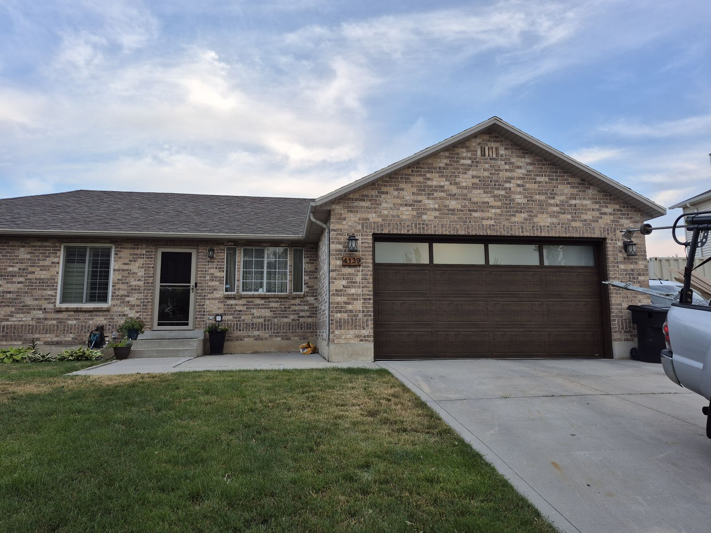
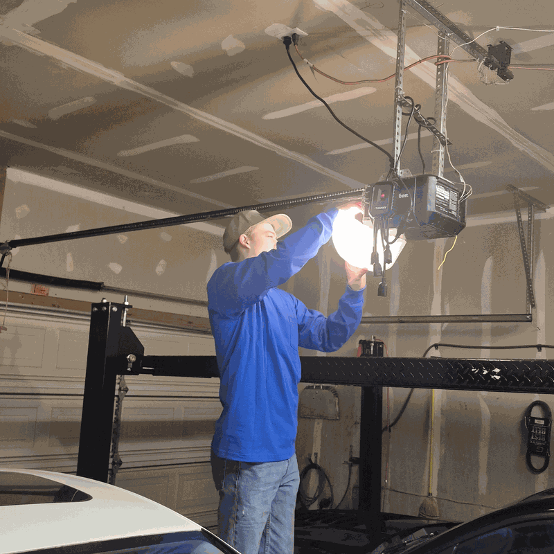

Our Home Base
Garage Door Repair in West Jordan, Utah
Quick Fix Garage Doors is based on Targhee Drive in West Jordan, so when a spring snaps or an opener quits here, you're calling a neighbor instead of a dispatch center in another county.
Licensed & Insured Utah Contractor
Based in West Jordan
5 Star Google Rating
Open 24 Hrs Mon to Thu
Local Service in West Jordan
West Jordan is home base
Our address is 9256 Targhee Dr, in the 84088 ZIP code on the city's southwest side. That puts us close to every corner of West Jordan, from the older streets near Redwood Road to the newer subdivisions climbing toward the Oquirrh Mountains along the Mountain View Corridor. With 24-hour availability Monday through Thursday, we're set up for the weekday morning call when a broken spring leaves the car stuck inside.
West Jordan grew in waves, and you can read those waves in its garages. Neighborhoods near Redwood Road and Veterans Memorial Park include plenty of ramblers and split levels whose doors may still lift on extension springs that run along the tracks. Farther west, around Copper Hills High School and the subdivisions off 7800 South and 9000 South, homes are newer, with two- and three car garages, torsion springs above the door, and openers now reaching the age when gears and circuit boards start to fail.
If you live near Jordan Landing, the SLCC Jordan Campus or South Valley Regional Airport, we're on Bangerter, the Mountain View Corridor, 7800 South and 9000 South every day, so it's a short drive to you.

Serving ZIP 84081, 84084 & 84088
What we see most in West Jordan
Springs that give out in the cold
Winter mornings here regularly drop well below freezing, and a torsion spring near the end of its life is more likely to snap on a cold start. If you hear a loud bang from the garage and the door suddenly feels like it weighs a few hundred pounds, stop using the opener and call us.
Wind and dust on the west side
Homes toward the Oquirrhs sit in the path of afternoon wind coming across open ground. Wind blown dust works into rollers and tracks, and gusts strain a wide double door that's already out of balance. Cleaning, lubrication, and a balance check fix most of it.
Aging builder installed openers
Many West Jordan homes still have the opener the builder put in. When a chain drive hums but doesn't move, or the door reverses for no clear reason, the cause is usually a stripped gear, a failing board, or safety sensors knocked out of line. We repair what's worth repairing and tell you plainly when replacement makes more sense.
Summer heat on sun facing doors
July afternoons bake dark steel doors. Heat dries out weatherstripping and the bottom seal, and low evening sun can shine straight into the photo eye sensors and make the door reverse. New seals and realigned or shaded sensors usually solve it.
Garage door repair services in West Jordan
Torsion and extension spring replacement for West Jordan homes, with the door balanced and tested before we leave.
Garage Spring RepairDiagnosis and repair for openers that hum, grind, or reverse, or a quieter belt drive replacement.
Garage Motor & Opener RepairLubrication, hardware tightening, and roller and track checks to quiet a noisy door and catch worn parts early.
Garage Door Tune-UpNew insulated steel doors sized to your opening, with the old door hauled away.
Garage Door InstallationWest Jordan garage door repair FAQ
Where is Quick Fix Garage Doors located?
Our address is 9256 Targhee Dr, West Jordan, UT 84088. Almost all of our work happens at your home, so call 801-641-6850 and we'll come to you.
Do you cover every West Jordan ZIP code?
Yes. We serve 84081, 84084, and 84088, which together cover West Jordan from the Jordan River west to the Oquirrh foothills.
Can you come early in the morning or at night?
Our hours are 24 hours Monday through Thursday, midnight to 8 PM on Friday, and 5 AM to 4 PM on Saturday and Sunday. If your door is stuck open, call and we'll tell you how soon we can get there.
Should I keep using my door if a spring broke?
No. A broken spring puts the full weight of the door on the opener and the remaining hardware. Leave the door closed if you can, keep people and cars clear, and call us. Never try to unwind or adjust a torsion spring yourself; the tension can cause serious injury.
Garage door repair near West Jordan
These are the cities around our West Jordan shop. See every city on our service areas page.
West Jordan garage door repair: call Quick Fix
Spring broke or the opener quit? We're right here in town. Call for a free estimate.
(801) 641-6850Mon to Thu: open 24 hours · Fri: 12 AM to 8 PM · Sat & Sun: 5 AM to 4 PM